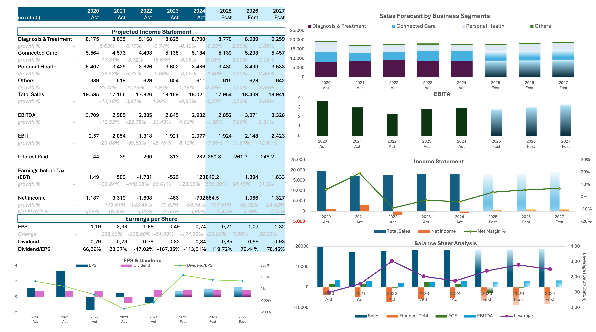
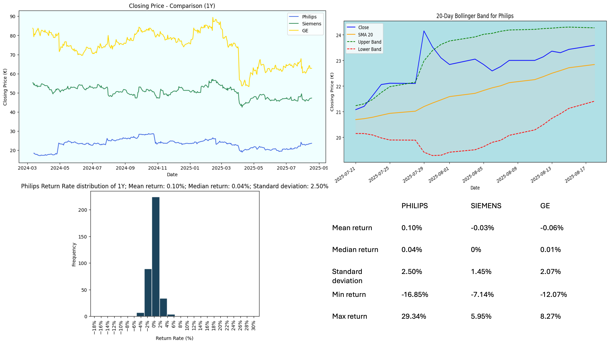
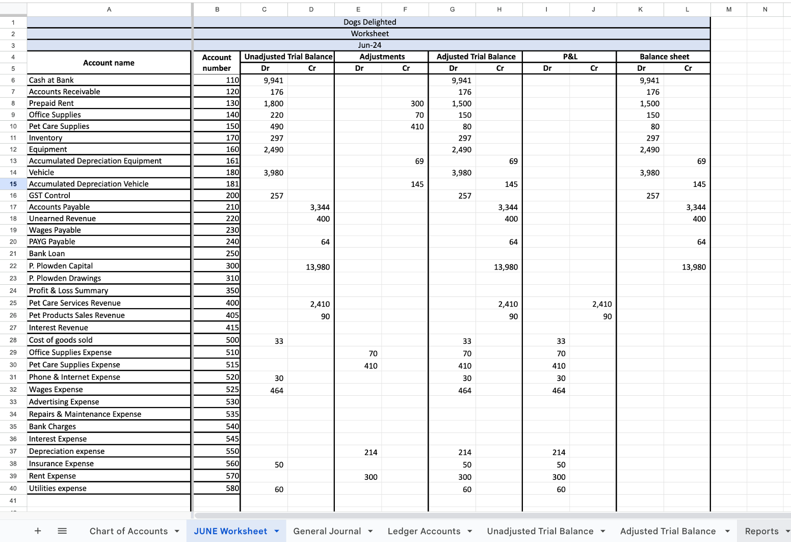

July 2025
Using Excel to developed a comprehensive financial modeling and valuation report for Philips, including historical financial analysis, DCF valuation, and capital efficiency assessment. Created forward-looking forecasts on revenue, margins, and EPS, while evaluating portfolio risk through VaR and expected shortfall calculations. Applied technical indicators (SMA, Bollinger Bands) for market trend analysis and produced a strategic SWOT and valuation scorecard to highlight growth opportunities, risks, and ESG positioning.


Using Python to conducted a comparative financial market analysis of Philips, Siemens Healthineers, and GE Healthcare by evaluating daily returns, volatility, and short-term trends using SMA and Bollinger Bands. Visualized stock performance over a one-year period to assess risk and return profiles. Findings highlighted Philips as the most balanced in growth and stability, Siemens as a moderate and defensive option, and GE Healthcare as the most volatile, appealing to risk-tolerant investors.

Utilizing Power BI to developed a P&L comparison dashboard to evaluate the financial performance of two healthcare projects (Bayonne and CHU Grenoble) for Philips. The dashboard compares key metrics such as sales, IGM%, and ISM% over a 10-year horizon, providing a clear view of profitability and cost drivers. Insights show Bayonne outperforming CHU Grenoble in both sales and margin strength, enabling stakeholders to identify the more sustainable and profitable project scenario.

Completed full-cycle accounting for Dogs Delighted, including transaction recording, reconciliations, and preparation of financial statements (P&L, Balance Sheet, Equity Statement). Ensured zero discrepancies in the general journal and enhanced financial analysis accuracy by 100% to support project evaluation..

Developed an interactive Excel dashboard to analyze and monitor bank loan applications and funding performance. The report tracks key metrics including total applications, funded and received amounts, average interest rates, and debt-to-income ratios. It also provides breakdowns by geography, loan purpose, employment length, loan term, and home ownership. Insights revealed steady monthly growth in loan applications, strong portfolio funding, and a concentration of loans in debt consolidation and credit card refinancing, primarily from long-term employed borrowers and mortgage holders.

In this SQL project, I analyzed e-commerce customer, order, and revenue data from 2016–2018 to generate business insights. The analysis revealed strong revenue growth to $15.4M, but also highlighted low customer retention with only 3% repeat buyers. I identified that a small group of product categories and top-selling items drove most sales, while operational efficiency was strong with a cancellation rate below 1%. Additionally, I uncovered regional payment preferences and an average order value of $153, providing actionable insights to support marketing, pricing, and customer loyalty strategies.

Tableau Dashboards for projects on Loan Book Tracking, HR Analytics, and AirnBnB’s Price in Amsterdam. Explore the Loan Book Tracking project, where we analyze loan data to track performance and identify trends. Delve into our HR Analytics project, offering comprehensive insights into workforce dynamics and employee attrition. Additionally, uncover the intricacies of Airbnb pricing in Amsterdam, as we dissect pricing trends, and demand fluctuations influencing rental rates in Amsterdam city.
{kind=link}